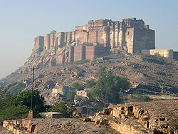

Mehrangarh Fort covers an area of 1,200 acres (486 hectares) in Jodhpur, Rajasthan, India. The complex is located on a hilltop around 122 metres above the surrounding plain,[1] and was constructed circa 1459 by Rajput ruler Rao Jodha, though most of the existing structure is from the 17th century. Inside its boundaries there are several palaces known for their intricate carvings and expansive courtyards, as well as a museum housing various relics. A winding road leads to and from the city below. The imprints of the impact of cannonballs fired by attacking armies of Jaipur can still be seen on the second gate. To the left of the fort is the chhatri of Kirat Singh Soda, a soldier who fell on the spot defending Mehrangarh.
There are seven gates, which include Jai Pol (meaning 'victory gate'), built by Maharaja Man Singh to commemorate his victories over the Jaipur and Bikaner armies in 1806. The Fattehpol (also meaning 'victory gate'), commemorates victory of Maharaja Ajit Singh over the Mughals.
Some of the notable festivals taking place here include the World Sacred Spirit Festival and Rajasthan International Folk Festival
View if fort:
History:
Rao Jodha, the chief of the Rathore clan, is credited with the origin of Jodhpur in India.[2] He founded Jodhpur in 1459 as the capital of Marwar (Mandore was the previous capital). He was one of Ranmal's 24 sons and became the fifteenth Rathore ruler. One year after his accession to the throne, Jodha decided to move his capital to the safer location of Jodhpur, as the one thousand years old Mandore fort was no longer considered to provide sufficient security. With the trusted aid of Rao Nara (son of Rao Samra), the Mewar forces were subdued at Mandore. With that, Rao Jodha gave Rao Nara the title of Diwan. With the help of Rao Nara, the foundation of the fort was decided on 12 May 1459[3] by Jodha on a rocky hill 9 kilometres (5.6 mi) to the south of Mandore. This hill was known as Bhakurcheeria, the mountain of birds. According to legend to build the fort he had to displace the hill's sole human occupant, a hermit called Cheeria Nathji, the lord of birds. Cheeria Nathji was a man with the local population as his followers and hence influential in the region. When requested to move he refused categorically. This happened many times. Rao Jodha then took extreme measures and sought help from another more powerful saint, the female warrior sage of Charan community Shri Karni Mata of Deshnok. On request of the king she came and asked Cheeria Nathji to quit immediately. Seeing a superior power he left at once but cursed Rao Jodha with words "Jodha! May your citadel ever suffer a scarcity of water!". Rao Jodha managed to appease the hermit by building a house and a temple in the fort. Seeing the influence of Karni Mata Rao Jodha then invited her to lay down the foundation stone of the Mehrangarh Fort and the same was carried out by her. Today only the forts of Bikaner and Jodhpur remain in the hands of Rathores, both had their foundation stone laid by Shri Karni Mata. All other Rajput forts of Rajasthan were abandoned for some or the other reasons by the respective clans. Only the Rathores of Jodhpur and Bikaner have their forts with them till date. This fact is considered a miracle by the local population and is attributed to Shri Karni Mata. Rao Jodha also granted villages of Mathania and Chopasni to the two Charan warlords who were sent by him to request maa Mehaai to come to Jodhpur.[4]
To ensure that the new site proved propitious; he buried a man of the Meghwal caste called "Raja Ram Meghwal", who offered his services voluntarily, alive in the foundations as this was considered auspicious those days. "Raja Ram Meghwal" was promised that in return his family would be looked after by the Rathores. His family was granted land and to this day his descendants still live in Raj Bag, near Soor Sagar.
Mehrangarh (etymology: 'Mihir' (Sanskrit) -sun or Sun-deity; 'garh' (Sanskrit)-fort; i.e.'Sun-fort'); according to Rajasthani language pronunciation conventions, 'Mihirgarh' has changed to 'Mehrangarh'; the Sun-deity has been the chief deity of the Rathore dynasty.[5] Though the fortress was originally started in 1459 by Rao Jodha, founder of Jodhpur, most of the fort which stands today dates from the period of Maharaja Jaswant Singh (1638–78). The fort is located at the centre of the city spreading over 5 kilometres (3.1 mi) on top of a high hill. Its walls, which are up to 36 metres (118 ft) high and 21 metres (69 ft) wide, protect some of the most beautiful and historic palaces in Rajasthan. Khandwaliya community one of the old traditional community had the knowledge of breaking the big stones made this fort with others.

Entry to the fort is gained through a series of seven gates. The most famous of the gates are:
- Jai Pol ("Gate of Victory"), built by Maharaja Man Singh in 1806 to celebrate his victory in a war with Jaipur and Bikaner.
- Fateh Pol, built to celebrate a victory over the Mughals in 1707
- Gopal Pol, it is the second Pol after Fateh Pol.
- Dedh Kangra Pol, which still bears the scars of bombardment by cannonballs
- Amruti Pol, it is in between Dedh Kangra Pol and Loha Pol.
- Loha Pol, which is the final gate into the main part of the fort complex. Immediately to the left are the handprints (sati marks) of the ranis and some princesses, who had committed Sati over the years after death of their husband. Suraj Pol, inner most gate which provides access to palace complex and Daulat Khana Chauk.
Within the fort are several brilliantly crafted and decorated palaces. These include, Moti Mahal (Pearl Palace), Phool Mahal (Flower Palace), Sheesha Mahal (Mirror Palace), Sileh Khana and Daulat Khana. The museum houses a collection of palanquins, howdahs, royal cradles, miniatures, musical instruments, costumes, and furniture. The ramparts of the fort house preserved old cannon (including the famous Kilkila), and provided a breath-taking view of the city.
For booking:
Go to this website for your booking : Book now